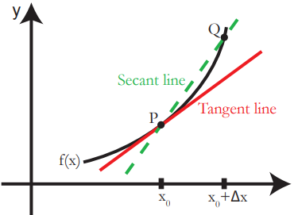

Further Quantitative Methods
Companian to the series: Introduction to Political Economics
Preface
This book is one of the 3 mathematical-companian-guides of the part of a series: Introduction to Political Economics. These companian guides are meant to ensure that one has the proper mathematical training prior to studying Political Economics:
- Quantitative Methods introduces the essential mathematical concepts that are essential for studying Political Economics. Topics include algebra, single variable calculus, and probability and statistical theory.
- Further Quantitative Methods (This Book) expands on the topics taught in the previous book. These topics are not “essential”, but it is highly recommended to have some grasp of these topics. Topics include linear algebra and multivariate calculus.
- Introductory Proofs and Analysis is a high-level introduction to proofs in mathematics. This is not essential for studying Political Economics, but having a strong idea behind proofs is quite useful for more advanced Microeconomic Models that are used in the study of Political Economics.
This book, Further Quantitative Methods, is a collection of mathematical and statistical topics that I consider to very useful, although not absolutely essential, before instruction of Political Economics. This book assumes a strong understanding of high-school level algebra, as well as the algebra and calculus topics from Quantitative Methods. In this book, we first discuss topics in linear algebra, before moving on to multivariate calculus.
Introductory Linear Algebra
Matrices
Matrix Operations
topics 3.2-3.3
Inverse Matrix
Simple Linear Systems of Square Matrix
Elementary Row Operations and Reduced Row Echelon Form
Theorems on Matrix Invertibility
Determinant of a Matrix
Linear Systems of Invertible Square Matrix
General Linear Systems
Geometric Insight of a 2-Dimensional Plane
K-dimensional Flats
Solving Lienar Systems of Equations
Solution Sets and Linearity
Analysing Solution Sets with the Rank
Basics of Probability and Statistics
Basic Probability
See Mathematical Methods for Political Economy for more detailed explanations.
Sets and Set Operators
A set is the collection of objects, while the elements of the set are the specific objects within a set. A capital letter is used to represent a set, for example, set \(A\). A lowercase letter represents an element within the set. For example, element \(a\) is a part of set \(A\).
There are a few different set operators that are important to understand.
An intersection of sets \(A\) and \(B\), formally notated \(A \cap B\), indicates the elements that are both within \(A\) and \(B\) at the same time.
- For example, if \(A = \{1,2,3\}\) and \(B = \{2,3,4\}\), then \(A \cap B = \{2, 3\}\), since those are the elements that are contained in both \(A\) and \(B\) at the same time.
A union of sets \(A\) and \(B\), formally notated as \(A \cup B\), indicates elements that are in either \(A\), \(B\), or both \(A\) and \(B\).
- For example, if \(A = \{1,2,3\}\) and \(B = \{2,3,4\}\), then \(A \cap B = \{1,2, 3,4\}\).
- \(A \cup B = A + B -A \cap B\). We subtract \(A \cap B\) since that part is counted twice in both \(A\) and \(B\), so we need to get rid of it once to avoid over-counting.
The complement of set \(A\) is everything that is not in \(A\), but still within the universal set. The complement is denoted as \(A'\) or \(A^c\).
- For example, if the universal set contains \(\{1,2,3,4,5\}\), and \(A = \{1,2\}\), then \(A' = \{3,4,5\}\)
A subset \(A\) has all its elements belonging to another set \(B\). This is notated \(A \subset B\).
- For example, if \(A = \{1,2\}\), and \(B = \{1,2,3\}\), then \(A\) is a subset of \(B\) since all of \(A\)’s elements belong to set \(B\) as well.
Basic Properties of Probability
Kolmogrov’s Axioms are the key properties of probability:
- For any event \(A\), the probability of \(A\) occurring is between 0 and 1.
- The probability of all events in the sample space \(S\) is 1. Mathematically: \(Pr(S) = 1\). The sample space is the set of all possible events.
- If we have a group of mutually exclusive events \(A_1, A_2, ... , A_k\), then the probability of those events all occurring is the sum of their probabilities. Mathematically, \(Pr \left( \bigcup A_i \right) = \sum Pr(A_i)\)
- Note: mutually exclusive events are events that cannot occur at the same time together.
Other important properties to note include:
\(Pr(A') = 1 - Pr(A)\) - the probability of the complement of \(A\), is equal to 1 minus the probability of \(A\)
\(Pr(A \cup B) = Pr(A) + Pr(B) - Pr(A \cap B)\) - this is because of a property of unions, as shown in section 2.2
Joint and Conditional Probability
Joint Probability is the probability of two or more events occurring simultaneously. The joint probability of events \(A\) and \(B\) is notated \(Pr(A \cap B)\).
For example, in a deck of cards, \(A\) could be the event of drawing an ace, and \(B\) could be the event of drawing a spade. Thus, \(Pr(A \cap B)\) would be the probability of drawing a card that was both an ace and a spade.
Conditional Probability is the probability of one event occurring, given another has already occurred. Probability of event \(A\), given event \(B\) has occurred, is notated as \(Pr(A|B)\)
To calculate the conditional probability, we use the following formula:
\[ Pr(A|B) = \frac{Pr(A \cap B)}{Pr(B)} \]
Bayes’ Theorem
Bayes’ Theorem states the following relationship is true:
\[ Pr(A|B) = \frac{Pr(B|A) \times Pr(A)}{Pr(B)} \]
Each part of Bayes’ Theorem has a name. They are commonly referenced, so it is useful to know their names:
\(Pr(A|B)\) is the conditional probability
\(Pr(B|A)\) is the posterior probability
\(Pr(A)\) is the prior probability
\(Pr(B)\) is the marginal probability
Basic Statistics
See Essential Mathematics for Political Economy for more detailed explanations.
Random Variables
Random variables are variables that represent unobserved events that have some randomness - a set of potential outcomes, with each outcome having a probability of occurring.
For example, if you flip a coin 10 times, and count the number of heads you get, you could get 5 heads, 6 heads, 4 heads, or any amount between 0 and 10. We are not sure what will happen - however, some outcomes are more likely than others, because of the probabilities associated with each outcome.
There are two types of random variables:
Discrete Random Variables are random events which have a distinct number of outcomes. For example, rolling a dice has 6 outcomes.
Continuos Random Variables are random events which have an infinite amount of outcomes. For example, my drive to work tomorrow could take 5 minutes, 5.123 minutes, 5.234237847 minutes, and so on… there is no distinct outcomes since you can continuously subdivide the gaps between outcomes by adding more decimal points.
Distributions and Probability Density Functions
Random variables are often called distributions - because there are a distribution of outcomes, with associated probabilities for each outcome. We can actually graph this - put potential outcomes on the \(x\) axis, and the probability that each outcome occurs on the \(y\) axis.
For example, take this probability distribution of a die - there are 6 sides that you could land on, and each has an equal probability of occurring:

The probability mass/density function \(f(y)\) takes a potential outcome of an event as an input, and outputs the respective probability.
For example, the probability mass/density function of a dice is \(f(y) = 1/6\). This is because every outcome \(y\) has the same probability of occurring: \(1/6\). So \(f(1), f(2)... = 1/6\).
Expectation and Variance
Expectation and Variance are two ways we can summarise the distributions of random variables.
The expectation, often called the expected value or mean, is the best guess of an outcome of a random variable, given no other information except its distribution. We notate expected value of a variable \(Y\) as either \(E[Y]\), \(\bar{Y}\), or \(\mu\).
The expected value for discrete variables is calculated by multiplying each outcome value by its associated probability, then doing that for all outcomes, and summing everything together. In other words, it is a weighted average of the outcomes, with the weights being the probability of each outcome.
\[ E[Y] = y_1 \times f(y_1) + y_2 \times f(y_2)... = \sum [y_j \times f(y_j)] \]
For a continuous random variable, it is a little more complicated. This is because continuous variables have an infinite number of potential outcomes. For example, if you drive to school, your driving time could be 23 minutes, or 23.12 minutes, or 23.123324 minutes… basically, an infinite amount. As a result, we have to alter the expected value formula a little:
\[ E[Y] = \int\limits_{-∞}^∞ y \times f(y)dy \]
Variance \(\sigma^2\) is a measure of how spread out our distribution is. Variance basically measures how far values are, on average, from the mean of the variable. Mathematically:
\[ Var(X) = \sigma^2 = \frac{1}{n} \sum (X-\mu)^2 = E[(X - \mu)^2] \]
Where \(\sigma^2\) is the variance, \(n\) is the number of observations, and \(\mu\) is the mean of \(X\)
Standard Deviation \(\sigma\) is the square root of variance \(\sigma^2\)
Normal Distribution and T Distribution
A normal distribution is in the shape of a bell curve. The mean \(\mu\), mode, and median are all the same value at the centre, and the distribution is symmetrical on both sides. The figure below shows the typical shape of a normal distribution

All Normal Distributions, as shown in the image above, follow the 68-95-99.7 rule:
Within one standard deviation \(\sigma\) of the mean \(\mu\), lies 68.26% of the total area under the curve
Within 2 standard deviations \(2 \sigma\) of the mean \(\mu\), lies 95.44% of the total area under the curve
In fact, any amount of standard deviations \(\sigma\), including decimals, is related to a specific percent of total area under the curve, for all normal distributions.
This is important, because the area under the distribution curve is the probability. Thus, the normal distribution tells us there is a relationship between the standard deviation and the probability of an action occurring.
Any normal distribution can be described with 2 features: mean \(\mu\) and variance \(\sigma^2\) in the following form: \(X \sim \mathcal{N}(\mu, \sigma^2)\). For example, \(X \sim \mathcal{N} (30, 4)\) means a normal distribution with mean 30 and variance 4.
The T distribution is a distribution very similar to the shape and size of the normal distribution, however, generally has thicker tails and a lower peak. The key difference is that t-distributions are defined with only one parameter - degrees of freedom \(DF\).
Covariance and Correlation
In political economy, we are often interested in the relationship between two variables. For example, are oil producers more likely to be democratic? Are more educated voters more likely to turn out and vote? The relationship between two features, also called correlation, is the extent to which they tend to occur together.
A positive correlation/relationship is when we are more likely to observe feature \(Y\), if feature \(X\) is present
A negative correlation/relationship is when we are less likely to observe feature \(Y\), if feature \(X\) is present
No correlation/relationship is when we see feature \(X\), that does not tell us anything about the likelihood of observing \(Y\)
We can also visualise these graphically:

Covariance is a way to measure the relationship between two variables. Covariance is the extent that \(X\) and \(Y\) vary together. Mathematically:
\[ Cov(X,Y) = \sigma_{XY} = \frac{1}{n} \sum (X_i - \bar{X})(Y_i - \bar{Y}) \]
Or more simply:
In our data, we have many different pairs of data points \((X_i, Y_i)\)
\(X_i\) is some value of \(X\), and \(\bar{X}\) is the mean of \(X\). Same goes for \(Y_i\) and \(\bar{Y}\)
Thus, \(X_i - \bar{X}\) is the distance between any point \(X_i\) and the mean \(\bar{X}\). Same goes for \(Y_i - \bar{Y}\)
\(n\) is the number of observations (data points) in our data
We can interpret the sign of the covariance: if it is positive, we have a positive relationship. if it is negative, we have a negative relationship. However, we cannot interpret the numerical value of the covariance.
To do that, we have to find the correlation coefficient. We calculate this by taking the covariance, and dividing it by the product of the standard deviation of \(X\) and the standard deviation of \(Y\). Mathematically:
\[ Corr(X,Y) = r = \frac{Cov(X,Y)}{\sigma_X \sigma_Y} \]
The correlation coefficient is always between -1 and 1.
The direction is the same as the covariance - if the coefficient is positive, then we have a positive relationship, vice versa.
If the correlation coefficient is closer to -1 or 1, it means a strong correlation. If the correlation is closer to 0, then it is a weak correlation
Best Linear Predictor
While the correlation coefficient tells us the strength of a correlation, it does not say anything about the magnitude of the relationship. For example, if \(X\) increases by one unit, how much does \(Y\) increase by? The correlation coefficient does not say.
- In a linear model, the \(X\) variable is considered the explanatory or independent variable, while the \(Y\) is the response or dependent variable.
Magnitude is quite an important concept. After all, even if two values are very highly correlated, if an increase of one unit in \(X\) only leads to a miniscule increase in \(Y\), this relationship might not be very important for understanding the world.
A way to estimate the magnitude of the relationship between \(X\) and \(Y\) is the best linear predictor. The best linear predictor is a best fit line for the data, that takes the form of a linear equation: \(Y = \alpha + \beta X\).
In this equation, the \(\beta\) term in the best fit line is the slope of the linear equation. Essentially, it tells us for every increase in one unit of \(X\), how much do we expect \(Y\) to increase by?
- We can interpret the sign of \(\beta\): a positive \(\beta\) is a positive relationship, a negative \(\beta\) is a negative relationship, and \(\beta = 0\) is no relationship.
- We can also interpret the magnitude of \(\beta\): as \(X\) increases by 1 unit, \(Y\) is expected to increase by \(\beta\) units.
The Best Linear Predictor is a form of Linear Regression, the primary topic we will cover in the next two chapters.